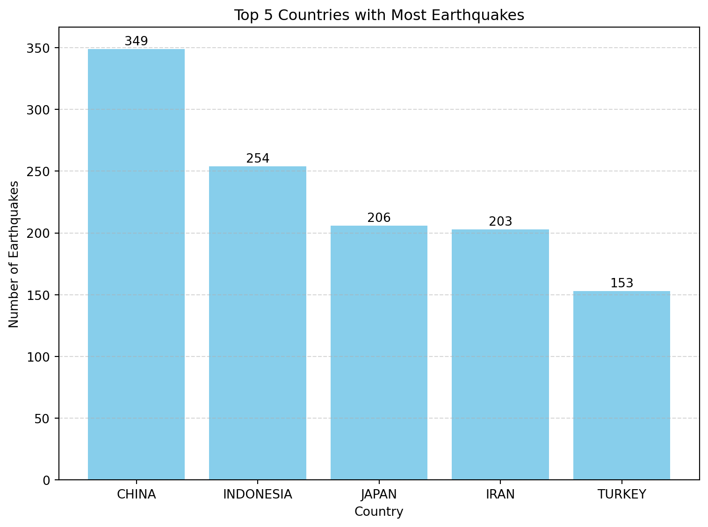
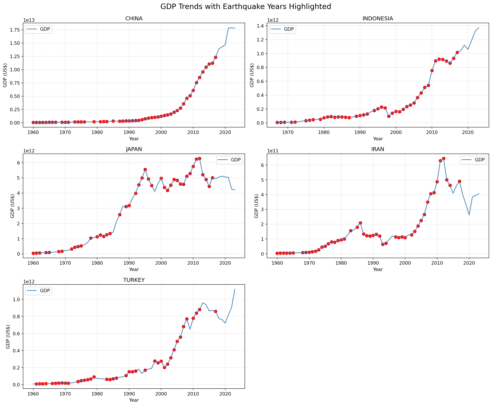

Will earthquakes affect the country’s GDP development ？
finds out the top 5 countries with the most frequent earthquakes
Code
import pandas as pdimport matplotlib.pyplot as pltdf_eq = pd.read_csv("cleaned_data/Merged_Earthquake_Data.csv") top5_earthquake_countries = ( df_eq[df_eq["country"].notna()] .groupby("country") .size() .sort_values(ascending=False) .head(5) .reset_index(name="Earthquake Count"))plt.figure(figsize=(8, 6))bars = plt.bar( top5_earthquake_countries["country"], top5_earthquake_countries["Earthquake Count"], color="skyblue")for bar in bars: height = bar.get_height() plt.text( bar.get_x() + bar.get_width() /2, height +1, f"{int(height)}", ha='center', va='bottom', fontsize=10 )plt.ylabel("Number of Earthquakes")plt.xlabel("Country")plt.title("Top 5 Countries with Most Earthquakes")plt.grid(axis="y", linestyle="--", alpha=0.5)plt.tight_layout()plt.show()

plots the time trend of GDP for these countries + labeled years of earthquakes
Code
import pandas as pdimport matplotlib.pyplot as pltdf_gdp = pd.read_csv("cleaned_data/Global_GDP_cleaned.csv")df_eq = pd.read_csv("cleaned_data/Merged_Earthquake_Data.csv")df_gdp["Country Name"] = df_gdp["Country Name"].str.upper()df_eq["country"] = df_eq["country"].str.upper()top_countries = ["CHINA", "INDONESIA", "JAPAN", "IRAN", "TURKEY"]country_mapping = {"IRAN": "IRAN, ISLAMIC REP.","TURKEY": "TURKIYE"}mapped_names = [country_mapping.get(c, c) for c in top_countries]gdp_top = df_gdp[df_gdp["Country Name"].isin(mapped_names)]eq_years = df_eq[df_eq["country"].isin(top_countries)][["country", "Year"]].drop_duplicates()fig, axes = plt.subplots(nrows=3, ncols=2, figsize=(15, 12))axes = axes.flatten()for i, (orig_name, mapped_name) inenumerate(zip(top_countries, mapped_names)): ax = axes[i] df_c = gdp_top[gdp_top["Country Name"] == mapped_name] ax.plot(df_c["Year"], df_c["GDP"], label="GDP", color="steelblue") years = eq_years[eq_years["country"] == orig_name]["Year"].unique()for y in years:if y in df_c["Year"].values: gdp_y = df_c[df_c["Year"] == y]["GDP"].values[0] ax.scatter(y, gdp_y, color="red", s=40, label="Earthquake Year"if y == years[0] else"") ax.set_title(orig_name) ax.set_xlabel("Year") ax.set_ylabel("GDP (US$)") ax.grid(True, linestyle="--", alpha=0.4) ax.legend()for j inrange(len(top_countries), len(axes)): fig.delaxes(axes[j])plt.tight_layout()plt.suptitle("GDP Trends with Earthquake Years Highlighted", fontsize=16, y=1.02)plt.savefig("GDP_files/figure-html/gdp_earthquake_comparison.png", dpi=300, bbox_inches="tight")plt.show()

observation
China’s GDP shows uninterrupted exponential growth, especially after 2000, suggesting strong economic resilience and limited long-term impact from earthquakes. Indonesia presents steady growth with occasional dips, particularly in the late 1990s and mid-2000s, which may be linked to earthquakes or broader economic crises like the Asian financial crisis. Japan, a developed country with extensive earthquake exposure, maintains relatively stable GDP growth, with only a minor decline around 2011, potentially reflecting the impact of the Tōhoku earthquake. Iran displays the most volatility, with noticeable GDP drops around earthquake years such as 1990 and 2012, indicating higher economic vulnerability—possibly exacerbated by sanctions or governance issues. Turkey, though frequently affected by earthquakes, demonstrates strong post-2000 growth with only minor setbacks, such as a dip around 2001. Overall, the trends suggest that countries with higher GDP tend to exhibit greater economic resilience to earthquakes, while lower-GDP countries are more likely to experience noticeable economic disruptions following seismic events.
Question 2：Is there a relationship between the number of deaths from earthquakes and a country’s GDP (do countries with lower GDPs have higher death rates due to poor infrastructure and poor disaster response?)
Find out in which year the 5 countries with the lowest GDP had major earthquakes and death tolls